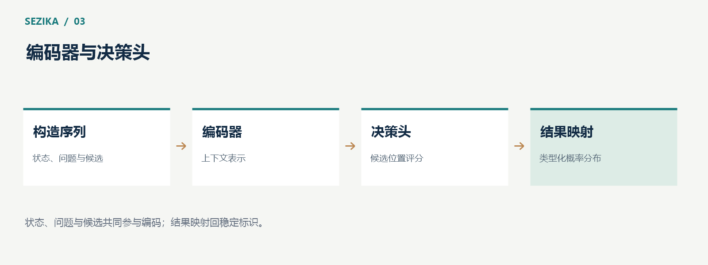

Sezika 的模型结构：从输入序列到类型化决策
Sezika 把状态、问题与候选组织成模型输入，通过编码器建立上下文表示，再由决策头对候选进行评分。理解这条数据路径，有助于解释它为什么适合结构化判断，也有助于识别输入长度、缓存和多问题处理的限制。

输入不仅是一段文本
一次决策需要三类信息：当前状态、要回答的问题，以及可供比较的候选或等级。状态可以是一段用户消息，也可以是由 JSON 表达的业务信息。问题说明评价目标，候选定义输出空间。
这些信息按固定协议进入序列。tokenizer 把文本转换成 token，候选标记为后续评分提供位置。序列的构造方式属于模型使用合同的一部分：候选顺序、标记含义或文本规范化发生变化，都可能影响结果。
因此，模型权重并不是完整系统。tokenizer、输入协议和决策头必须与权重一起匹配。仅仅加载了一个文件，并不能说明应用已经具备正确的语义处理路径。
编码器建立上下文联系
编码器对输入序列进行计算，让每个位置的表示包含上下文信息。在语义判断中，这使模型有机会把状态与候选联系起来。
例如，消息中的“又扣了一次”与候选“重复收费”并不共享全部字面词语，却可能指向同一意图。否定、时间、程度和限定条件也会影响这类联系：“没有重复扣款”与“重复扣款”应得到不同处理。
Sezika 的编码器实现涉及 embedding、注意力、归一化、位置计算和前馈网络等数值运算。CPU 与 CUDA 路径都需要对这些运算进行验证，避免后处理掩盖上游数值错误。
候选标记与决策头
编码器生成上下文表示后，决策头读取与候选标记相关的表示，形成候选得分。得分经过相应后处理，得到概率分布，并映射回候选标识或等级。
Choice 根据分布给出选中项，Score 计算有序等级的加权得分，Boolean 给出命题成立的概率。应用看到的是类型化结果，而不是一段需要再次解析的自由文本。
这种结构把语义计算和结果表达连接起来，但语义能力仍然来自模型与数据。接口类型正确，只能保证程序知道如何读取结果，不能保证判断本身正确。

为什么不能随意缓存一个状态向量
Sezika 当前的这类决策路径属于交叉编码：状态、问题和候选共同参与编码器计算。更换候选，就可能改变中间表示。
因此，不能先把状态编码成一个固定向量，然后只比较候选向量，并宣称与原路径完全等价。这样的方案属于另一种模型结构，需要单独训练和验证。
同样，多个问题即使共享状态，也可能分别形成完整序列。把它们组织为批次可以改变执行方式，但不意味着计算量与一个问题相同。应用在规划资源时，要同时考虑问题数量和各自的序列长度。
长输入需要明确的预算
更长的输入会增加计算和内存开销。调用方应在请求中保留与判断有关的信息，并设置模型允许的 token、候选和问题数量上限。
如果输入超出预算，静默截断可能删除关键事实或候选。当前独立路径强调严格的长度检查。对业务系统而言，明确返回输入错误，比根据被截断的内容给出看似完整的结论更容易处理。
不同模型和入口的长度范围也应分别读取。一个训练实验处理过长序列，不能据此推断所有部署入口支持相同长度。
预训练能力与自有决策训练
预训练编码器提供语言表示基础，决策训练则让模型适应候选选择、等级评价和真假判断。可以先固定编码器训练决策头，也可以进一步更新编码器参数；两种方式的成本和适用范围不同。
Sezika 已开展真实 C# GPU 全参数训练，但当前完整训练与正式质量验收仍待完成。已有编码器的语言覆盖、可运行的决策头和最终业务质量，应分别评价。
把模型结构讲清楚，最终是为了建立合理预期：它如何看到信息，输出如何产生，哪些调整会改变语义，以及哪些结论需要通过独立实验确认。
架构与模型使用说明见 Sezika 项目文档。